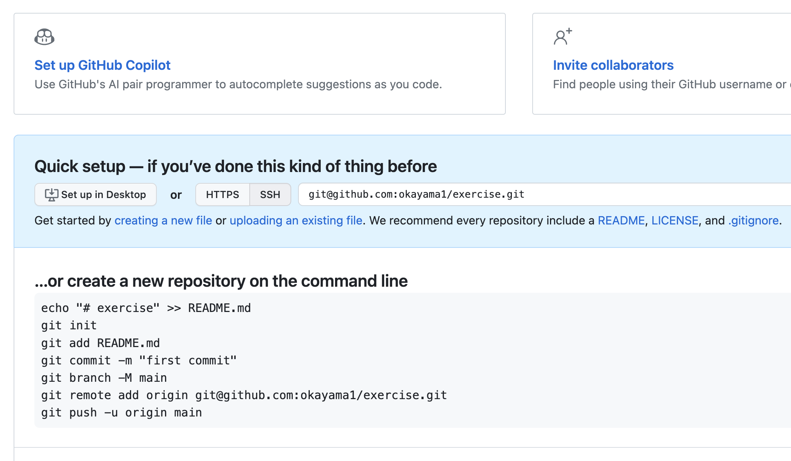
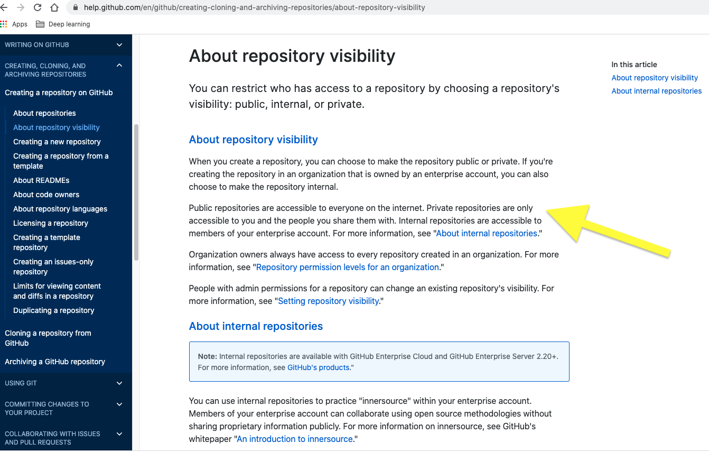
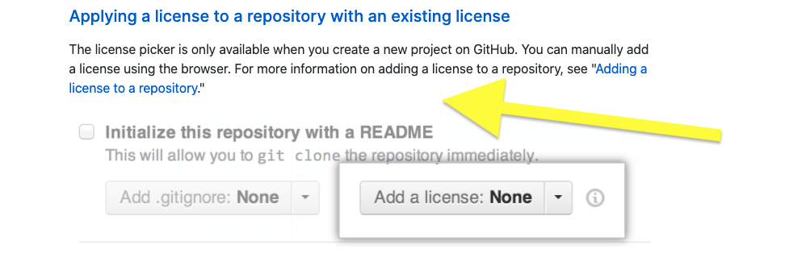
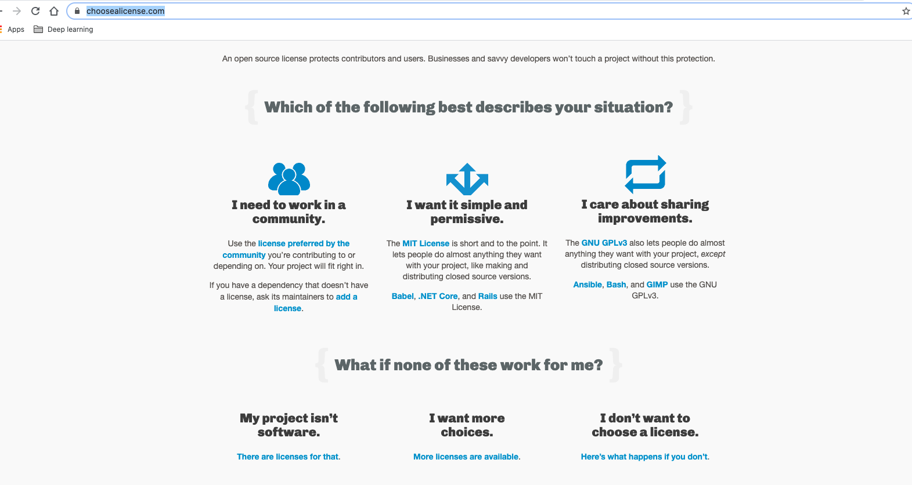
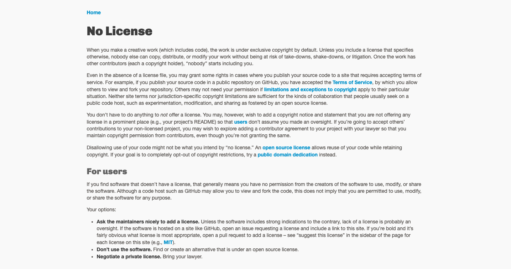
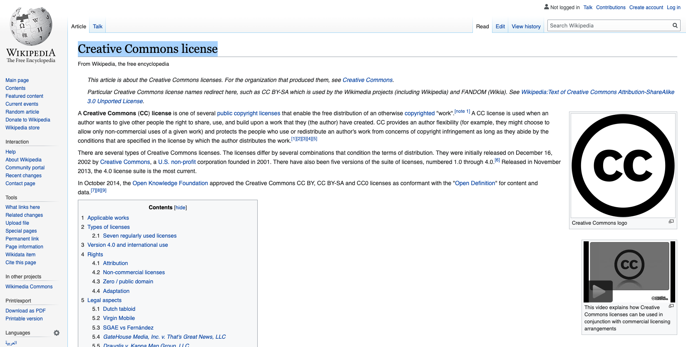

ETC5513: Reproducible and Collaborative Practices
Finding bugs, and building presentations
Lecturer: Michael Lydeamore
Department of Econometrics and Business Statistics
Open Frame
Recap
- Learn how to add references and bibliography
- Dealing with large files
- Tags
- GitHub issues
Today’s plan
Aim
- Create a
gitproject from an existing local folder - Licensing a repository
git blame- Templates for slides
Adding version control onto an existing project
Suppose you have a folder on your computer which is not version controlled, and you decide that you would like to start tracking it.
You go to GitHub and create a repo over there. You now have two options:
Approach 1:
- Create a GitHub repo
- Clone the repo locally
- Move all the files and folders from your existing project into this folder
- Stage, commit, push
Approach 2:
- Open a terminal in the directory for your folder
git initto create agitrepostiroy- Stage, commit
git remote add origin git@github.com:...git push -u origin main
Adding version control onto an existing project
Option 2 is preferred because it reduces duplication.
GitHub even gives you instructions:
The -u flag says to link remote origin to branch main. it is a one time operation.
Remember you can verify your remotes using git remote -v
Demo
Repository Visibility
Licensing
Public repos in GitHub make your work publicly available and therefore it is important to establish how your work should be acknowledged if someone else wants to use it.
Public repositories on GitHub are often used to share open source software. For your repository to be truly open source, you’ll need to license it sot that others are free to use, change and distribute the software.
Available licenses in GitHub
Choosing a license
License examples

No license
Creative Commons License
Creative Commons License
Location of your license
You can add a license by:
- Selecting the option on GitHub when you first create a repo
- Later by placing your license text in a file named LICENSE.md
Licenses go in the root of the directory. Some information about licenses is sometimes included in README.md as well, but this is not required.
What is git blame?
- A command that shows who last modified each line of a file.
- It includes:
- Commit hash
- Author name
- Timestamp
- Line content
Why is git blame useful?
- Debugging: Find out who introduced a specific line (or bug).
- History: Understand the evolution of code.
- Collaboration: Ask helpful questions, not blame people!
It’s about understanding, not accusing!
Example Output
3f23c8d2 (Alice Smith 2024-03-01 12:03:45 +0000 1) x <- 1
ed32fa01 (Bob Jones 2024-03-02 09:15:23 +0000 2) y <- x + 1
af9345dd (Charlie Liu 2024-03-03 16:42:07 +0000 3) print(y)- Shows who added each line and when.
How to Investigate Further
- Use
git show <commit>to see the full commit diff - Or
git log -Lto follow changes to a specific function or range
- Combine with
git bisectfor deeper history analysis
What is git bisect?
- A binary search through your commit history to find the commit that introduced a bug.
- You tell Git:
- A bad commit (where the bug exists)
- A good commit (before the bug existed)
- Git checks out commits in between until it finds the culprit.
Why use git bisect?
- Efficient — checks only log₂(n) commits
- Ideal for long histories or subtle bugs
- You can even automate the check with a script!
Visual Explanation
o---o---o---o---o---o---o
G ? ? BG: Good commit (known to be bug-free)B: Bad commit (where bug is present)- Git tests midpoints (
?) and narrows down.
Step-by-Step Example
git bisect start
git bisect bad # current commit is buggy
git bisect good <commit-id> # known good commitGit now checks out a middle commit. At each step, you say:
Once Found
Git will show something like:
3f9a2d1a is the first bad commit
Author: Charlie <charlie@example.com>Then, clean up with:
Optional: Automate Testing
Where test.R returns:
- 0 → good
- 1 → bad
This can save time for large projects!
Reproducible Presentations
So far we have only look at written guides (like books and documents) in Quarto. Now it is time to learn how to do presentations!
Slide Structure
To create slides, use horizontal rules (---) to separate them:
## Slide Title
Content for this slide
---
## Another Slide
More contentTypes of Slides
Use different heading levels to create nested slides (vertical stacks):
## Top-level slide
---
### Sub-slide (stacked under the previous)Useful for going deeper on a topic without changing the horizontal flow.
Fragments (Step-by-step Reveals)
Use ::: blocks with .fragment to reveal content piece-by-piece:
- Item 1
::: {.fragment}
- Item 2 (appears next)
:::
::: {.fragment}
- Item 3 (appears after that)
:::Press space to reveal each in order during the presentation.
Incremental Reveals
You can automatically reveal bullet points one at a time
by setting incremental: true in your YAML header:
Then, write a normal list:
- First point
- Second point
- Third pointEach list item will appear step-by-step when you present.
Columns
Use a .columns div and .column blocks inside:
::: columns
::: {.column width="50%"}
Left side content
:::
::: {.column width="50%"}
Right side content
:::
:::Useful for comparisons, images + text, or two-part layouts.
Themes & Transitions
You can customize the look:
Themes include: simple, solarized, beige, night, white, moon, etc.
Speaker Notes
Add presenter notes with ??? under the slide:
## Slide Title
Visible content
???
Notes only the presenter can see.Press ‘s’ during the presentation to open speaker view.
The .smaller class
You can use .smaller to shrink text size for dense slides or long code blocks.
This slide has .smaller applied!
Other Features
- Use
.pull-left/.pull-rightto align content - Embed code chunks just like in other
.qmddocuments - Reveal.js supports:
- Math (via LaTeX)
- Syntax highlighting
- Embedded videos/images
Get Started
To render your presentation:
- Save your file as
slides.qmd - Use the Render button in RStudio
- Or run in the terminal:
It will output an HTML presentation. Open it in your browser.
Week 9 Lesson
Important
- Licensing
- Initialising a repo without GitHub
git blame/bisect- Reproducible Presentations

ETC5513 Week 9